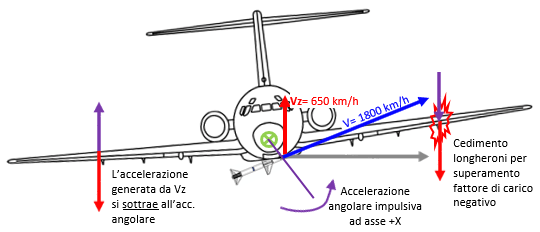
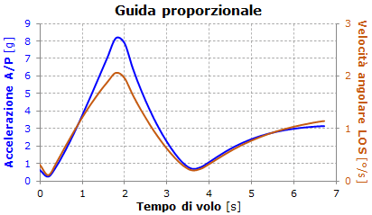
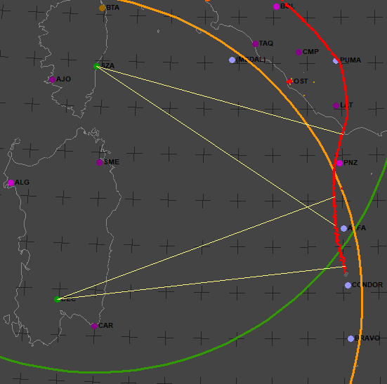

Abbattimento tramite missili inerti
In questa pagina viene preso in considerazione lo scenario in cui il DC-9 Itavia viene abbattuto tramite due missili inerti (da esercitazione) AIM-7C, la cui la testata esplosiva viene sostituita con materiale inerte.
L'argomento è stato già trattato nel forum di questo sito al thread "Abbattimento tramite missili inerti", ma qui vengono aggiunti ulteriori dettagli e si prende in considerazione specificatamente il missile AIM-7C da esercitazione lanciabile a testata inerte.
Per praticità, si riportano anche le note introduttive e le varie considerazioni già fatte nel forum.
Come nasce questa ipotesi?
Il documento "CAPO 3° - Gli inquinamenti" raccoglie un gran numero di dichiarazioni rilasciate dai più disparati personaggi volte ad inquinare le indagini con il fine di ostacolare il raggiungimento della comprensione dei fatti.
Le dichiarazioni dell’ex ufficiale dell’AMI Mario Ciancarella, riportate a partire da pag. 116, vengono esposte tra quelle fatte da "persone che in buona fede riferivano ricostruzioni obbiettivamente devianti".
A pag. 118 si può apprendere che Ciancarella riferisce di due colloqui telefonici intercorsi con il maresciallo Dettori, radarista a Poggio Ballone, appena dopo la sciagura del DC-9 Itavia.
Dettori gli avrebbe detto: "Ha visto il casino di Ustica? Siamo stati noi" e in seguito: "Dopo questa puttanata del MiG, le posso solo dire di cercare gli orari di atterraggio, i missili a guida radar e a testata inerte".
L’Autorità Giudiziaria ritiene che gli scritti presentati da Ciancarella siano "tutti connotati da osservazioni e considerazioni che appaiono ispirate, o quanto meno influenzate, dal particolare rapporto [pessimo, ndr] con l’Aeronautica." (v. pag. 117).
Un ulteriore cenno sul possibile abbattimento tramite missili inerti lo troviamo anche nel documento "motivazioni" della sentenza di I grado a pag. 224: "Valutata criticamente l’ipotesi formulata dal consulente di PC SEWELL (impatto di due missili contro il bersaglio), l’abbattimento è ritenuto ipotesi ragionevolmente da escludere anche se un abbattimento mediante impatto con missile inerte potrebbe rendere ragione delle caratteristiche di ritrovamento di esplosivo incombusto su alcuni reperti.".
Anche se l’ipotesi dei missili inerti viene esclusa, i missili da esercitazione (a testata inerte e di altro tipo), all’epoca dei fatti, esistevano ed ovviamente esistevano anche gli aerei per lanciarli. Ecco alcuni link in lingua inglese:
Nessuno dei link cita l'AIM-7C inerte, ma viene qui considerato per il fatto che il giudice Priore chiese informazioni all'AMI in merito a due consegne di 6 missili AIM-7C inerti ciascuna. Relativamente alla seconda consegna, il cui contratto di fornitura è del 1966, non è stato comunicato l'ente dell'AMI al quale i missili sono stati inviati. Inoltre, è stato possibile rintracciare solo 6 testate inerti (v. "
Relazione - Rif. IL/92 DEL 28.05.92"
fonte
, in particolare l'ultima pagina al punto "B" e anche la
tabella "Approvvigionamenti comunicati da COSTARMAEREO"
fonte
, sempre al punto "B"), con la conseguenza che non si può escludere che le altre possano essere finite nelle mani sbagliate.
Era, dunque, assolutamente possibile attaccare il DC-9 con due missili AIM-7C a testata inerte. Si può, quindi, provare a delineare un attacco di questo tipo e i possibili effetti sul DC-9.
Dubbi
Le ragioni politiche e militari che avrebbero indotto alcuni ad abbattere un aereo di linea non sono oggetto di questa trattazione, pubblicata con il solo scopo di analizzare se un attacco al DC-9 con due o più missili inerti fosse fattibile e se questo tipo d’attacco poteva provocare i danni e generare le altre evidenze di cui abbiamo ampia documentazione.
Dal punto di vista tecnico e logico viene da domandarsi: perché usare missili inerti e non due grossi AIM-7 con testata bellica che avrebbero completamente distrutto il DC-9 senza possibilità di scampo? La risposta è più ovvia della domanda: perché qualunque missile con testata bellica avrebbe lasciato una "firma" inconfondibile, permettendo, molto facilmente, di risalire al tipo di missile, facendo risultare che un aereo della NATO ha abbattuto un aereo civile di una nazione amica.
Inoltre, i missili inerti, se di massa sufficientemente grande, si prestano bene per simulare un cedimento strutturale, data la totale assenza di segni d'esplosione.
Un altro dubbio potrebbe riguardare la possibilità che possa essere recuperato qualche inconfondibile frammento di missile tra tutti i rottami, ad esempio le alette, risalendo, anche in questo caso, alla paternità del missile, ma leggendo il documento "Capitolo LVII - Quesiti a chiarimento sui recuperi - 30.11.94." si evince che tale possibilità è piuttosto remota. Ad inizio pag. 2, infatti, possiamo leggere: "fu così possibile accertare inosservanze e carenze nelle operazioni di ricerca e recupero dei relitti del DC9 e di quant'altro d'interesse alla ricostruzione dell'evento, nelle attività di documentazione di tali operazioni, negli obblighi del collegio;", tanto che il Giudice Istruttore chiese di riferire "i criteri in base ai quali gli oggetti non facenti parte del relitto erano stati stimati d'interesse o non, e conseguentemente recuperati o meno". Come dire che le società di recupero decidevano autonomamente l’importanza di ogni rottame ritrovato, in barba a tutta la schiera di periti preposti per analizzare minuziosamente ogni singolo frammento ripescato.
Prima di questo "filtraggio" operato dalle compagnie di recupero, è senz’altro verosimile l’attuazione di una precedente "ripulitura" del fondale. Ne è convinto anche il Giudice Istruttore; si veda la "sentenza del Tribunale di Palermo" a pag. 46 (link alternativo "parte04_46.pdf"), paragrafo 1.3.3: "prima delle campagne ufficiali di recupero del relitto qualcuno raggiunse il fondo e recuperò degli oggetti". Lo stesso Giudice Priore evidenziava che "all’epoca potevano raggiungere la profondità di quei fondali soltanto sommergibili francesi e statunitensi".
Vincoli da soddisfare
Assodata l’inesistenza di motivazioni reali che si possano opporre all’utilizzo di un paio di grossi missili inerti per abbattere il DC-9, resta il problema di trovare le evidenze che supportino tale ipotesi.
Tra gli elementi oggettivi che devono essere soddisfatti per rendere verosimile l’ipotesi, ce ne sono alcuni di fondamentale importanza descritti nel documento "Capitolo XXXI - Perizia metallografica-frattografica Firrao ed altri - 30.07.94.".
A fondo pag. 13, inizia la descrizione delle modalità secondo le quali il troncone più esterno (zona 3 della semiala sinistra) si è staccato dal resto della semiala: "Le modalità di rottura dei due longheroni sono totalmente analoghe ed appaiono determinate da una trazione, per le parti superiori dei longheroni, e da una compressione per le parti verso il basso. Tali modalità di rottura, anche per quanto riguarda i correnti, portano ad ipotizzare un’azione flettente ad asse -x (verso la coda)."; cioè il troncone terminale si è rotto a causa di una forza (che potrebbe anche essere fittizia) applicata sulla semiala sinistra avente una componente perpendicolare all'ala diretta verso il basso (contraria alla portanza generata durante il volo normale).
A pag. 14 i periti riportano le conclusioni delle analisi fatte sulla semiala sinistra:
"Le analisi condotte portano ad isolare due azioni principali:
- azione flettente ad asse z (alto-basso) alla radice dell’ala che ne ha causato il distacco dalla fusoliera;
- un’azione flettente ad asse -x (cabina-coda) che ha causato estesi danneggiamenti in corrispondenza dell’intera zona 2.
Le due azioni non sono collegate tra loro e, se si vuole dare una successione temporale, la seconda può essere considerata antecedente alla prima.".
Un ulteriore fatto da conciliare è quello che si può acquisire dal documento "Capitolo LXIX - Consulenza tecnica Bazzocchi ed altri - 15.12.94.", dove, a partire da fine pag. 9, viene descritta la sequenza degli eventi che, secondo i consulenti, avrebbero portato alla distruzione del DC-9: "un tratto dell’ala sinistra, a partire dalla estremità e per un’apertura di circa 5 m, si rompe per flessione negativa, si separa e viene recuperato sul fondo del mare ad una distanza di circa 10 km dal relitto principale nella direzione da cui proveniva il velivolo. Questa notevole distanza mostra chiaramente che tale tratto dell’ala si è separato in un tempo molto breve dall’evento catastrofico quando il velivolo era ancora a quota elevata." (probabilmente, la frase "nella direzione da cui proveniva il velivolo" va letta "nella direzione da cui proveniva il vento", altrimenti sembrerebbe una frase priva di senso, perché il troncone è stato trovato 10 km ad est del relitto principale, cioè, sospinto dal vento).
Abbiamo, infine, il vincolo dei motori che devono andare a finire nella zona del loro effettivo recupero; si vedano le considerazioni fatte nella pagina "Caduta in mare".
Questi elementi oggettivi devono essere tutti soddisfatti dalla sequenza degli eventi ipotizzata. Ciò, tuttavia, non accade per le versioni più semplicistiche delle ipotesi d’abbattimento tramite missile.
Infatti, tali ipotesi (nelle loro varianti) prevedono che un caccia abbia lanciato contro il DC-9, o contro un aereo nelle sue vicinanze, un missile (o due) a guida radar semi-attiva avente una piccola carica bellica e che a seguito della detonazione della testata, il corpo del missile abbia proseguito la sua corsa trapassando la fusoliera del DC-9, generando il grosso squarcio d’uscita ben visibile nella parte sinistra della fusoliera.
Questa versione non è ammissibile, poiché è incompatibile con quanto riscontrato da Firrao. Infatti, l’aereo avrebbe espulso attraverso lo squarcio un numero significativo dei malcapitati passeggeri e una certa quantità di oggetti, oltre ad aver perso una parte della fusoliera sbriciolata dal missile.
Una tale perdita di massa verificatasi in posizione molto avanzata rispetto a quella del baricentro può esclusivamente provocare una veloce cabrata (non può esserci alcun dubbio su questo fatto), a prescindere da qualunque tempestiva azione che i piloti avessero attuato per contrastarla (ammesso che i comandi avessero ancora funzionato).
La cabrata fa generare all’ala più portanza (fino a quando non stalla) e quindi un momento flettente verso l’alto, non verso il basso, come invece afferma Firrao osservando le evidenti deformazioni dei due longheroni della semiala sinistra.
Il vincolo del momento negativo può essere soddisfatto imponendo tre condizioni principali:
- i missili hanno una significativa componente verso l'alto della velocità al momento dell'impatto;
- almeno 1 missile inerte deve aver impattato una zona molto resistente del DC-9 situata in prossimità dell’ala: il carrello principale;
- il missile inerte deve aver posseduto un’enorme energia cinetica.
Infatti, se il missile impatta il carrello, l'energia sprigionata dall'impatto viene trasmessa a tutta la struttura accelerando il DC-9 nella direzione di volo del missile. Tale accelerazione può essere scomposta nelle tre componenti che agiscono lungo gli assi dell'aereo.
Se il missile proviene dal basso, l'accelerazione ha una componente in direzione -Z (verso l'alto) e se questa componente supera il limite certificato, la struttura subisce un danno che può limitarsi alla sola deformazione permanente o che può arrivare alla rottura e al distacco di elementi dell'aereo.
La mancata rottura, al momento dell'impatto, della semiala destra potrebbe significare che il missile possa aver impattato la gamba sinistra del carrello, imprimendo all'aereo anche una rotazione impulsiva (di brevissima durata, ma con elevata accelerazione angolare) ad asse +X, facendo rollare l'aereo a destra (cioè gli ha fatto abbassare la semiala destra).

L'immagine mostra come questo ulteriore movimento di rotazione porti all'incremento dell'accelerazione verticale che si somma vettorialmente all'accelerazione generata dall'impatto.
Le quattro frecce applicate sull'ala rappresentano l'inerzia delle due semiali che, con la loro notevole massa, si oppongono (per inerzia, appunto) all'accelerazione verticale diretta verso l'alto dovuta al missile, quindi flettono verso il basso, come in effetti risulta dalla deformazione dei due longheroni della semiala sinistra.
Si può vedere che i due vettori applicati sulla semiala destra si sottraggono (hanno direzione contraria), mentre quelli sulla semiala sinistra si sommano. Quindi la semiala sinistra si rompe, ma la destra no.
Profilo d'ingaggio
In questo paragrafo vengono analizzate nel modo più accurato possibile (in base alle informazioni disponibili) alcune modalità di lancio dei missili compatibili con i danni riscontrati sul DC-9 e tali da generare una sufficiente accelerazione verticale.
Siccome i missili sono inerti, il bersaglio può essere danneggiato solo per impatto diretto.
Alcuni periti disquisiscono sul fatto che il missile sia veramente in grado d’impattare il bersaglio, in quanto il potere distruttivo del missile è dato dalla detonazione della testata in prossimità del bersaglio che scaglia frammenti ad altissima velocità, non è necessario che il corpo del missile lo impatti.
Questo è certamente vero, ma è anche vero che se un missile aria-aria non è in grado d’impattare un "grosso" aereo di linea che vola con rotta, altitudine e velocità quasi costanti, c’è da chiedersi a quante decine di metri può passare da un aereo che manovra. Insomma, sembra veramente impossibile pensare che un AIM-7 avesse potuto mancare il DC-9.
Comunque, per rendere massima la probabilità di centrare l’aereo, l’attacco deve essere portato in modo da favorire il missile, cioè bisogna far "vedere" al missile una grossa superficie riflettente: l’ala. Questo implica che l’attacco avvenga ad una quota sufficientemente differente da quella tenuta dal bersaglio.
Un attacco dall’alto è da escludere per i seguenti motivi:
- il pilota del caccia fatica a vedere il bersaglio e deve mantenere una rotta piuttosto angolata rispetto a quella che conduce al bersaglio, altrimenti il muso del caccia copre la visuale;
- al momento d’agganciare con il radar il bersaglio, il caccia deve "tirare" g negativi (è sempre un fastidio sia per il pilota che per il caccia);
- se l'intercettore era un F-104S, mantenendo una rotta troppo angolata rispetto alla linea di vista (linea che congiunge il caccia con il bersaglio), l'arcaico radar NASARR non riesce ad agganciare il bersaglio;
- il caccia può essere rilevato dai radar del controllo del traffico aereo di Ciampino.
Molto meglio un attacco dal basso per i motivi opposti a quelli appena citati.
Per calcolare l’angolo verticale migliore per il lancio bisogna considerare sia la superficie riflettente del bersaglio che i limiti prestazionali di salita del caccia. Infatti, il bersaglio deve essere continuamente illuminato dal radar del caccia fino a quando il missile non lo colpisce; se l’angolo di rampa è troppo elevato, il caccia potrebbe avere problemi a mantenerlo stabilmente.
Un altro aspetto da considerare è che l’attacco deve infliggere il massimo danno strutturale al malcapitato DC-9. Ciò si ottiene facendo in modo che il missile colpisca l’aereo con la massima energia cinetica. Dalla formula Ec = ½ m V2 risulta chiaro che l’impatto deve avvenire con il missile alla massima velocità possibile, idealmente qualche istante dopo lo spegnimento del motore e comunque non troppo prima della minima distanza di lancio ammissibile.
Per calcolare in modo sufficientemente accurato l'energia cinetica sviluppata dall'impatto, si può ricorrere ad una simulazione simile a quelle già trattate per calcolare la traiettoria di caduta dei motori.
Il grado di accuratezza con il quale si riesce a determinare i danni che un missile causa al bersaglio dipende dal grado di accuratezza delle informazioni disponibili sul missile e sul bersaglio. Nel nostro caso, ad informazioni molto dettagliate su molti particolari, si contrappone l'assenza di altre informazioni sull'angolo di lancio e poco altro, per cui è necessario eseguire varie simulazioni per avere un quadro sufficientemente accurato del possibile risultato. I dati sono tratti dai seguenti documenti:
Il modello aerodinamico del missile è piuttosto accurato, in quanto prende in considerazione la resistenza di forma del corpo del missile, la resistenza dovuta alla viscosità dell'aria e quella dovuta all'onda d'urto supersonica. Viene, inoltre, considerata la resistenza delle quattro alette centrali (di governo) e delle quattro alette stabilizzatrici di coda; tale resistenza è ottenuta sommando quella dovuta alla viscosità dell'aria a quella derivante dall'onda d'urto. Per le alette centrali, inoltre, è considerata anche la resistenza aggiuntiva dovuta alla deflessione comandata dall'A/P.
Il sistema di navigazione del missile è proporzionale, ciò significa che l'accelerazione comandata dall'A/P è proporzionale alla velocità angolare della linea di vista ed è sempre ortogonale a questa (si parla di vettori). Nel caso dell'AIM-7C, l'accelerazione è limitata elettronicamente a 15 g.
Nella formula per l'accelerazione è presente la costante N che generalmente assume i valori 3, 4 o 5. Siccome non sono disponibili informazioni così dettagliate sullo Sparrow, la simulazione assume N = 4 (nel caso di un aereo che non manovra, come il DC-9, le differenze sono comunque minime).

Il grafico mostra un esempio ottenuto da una delle simulazioni illustrate più avanti.
Si nota chiaramente che l'accelerazione comandata è proporzionale alla velocità angolare della linea di vista (LOS).
Siccome l'accelerazione è anche proporzionale alla velocità relativa e a quella del missile stesso, i due grafici non sono esattamente sovrapponibili.
Una volta calcolata l'accelerazione da comandare, l'A/P invia il comando alle alette centrali. La modalità usata per impostare la traiettoria voluta è Skid-to-turn (si potrebbe tradurre in "derapa per virare"), cioè il missile non s'inclina per virare come fa un aereo o altri missili, ma usa le due alette verticali per cambiare direzione derapando e le due orizzontali per il controllo sia della traiettoria verticale che del rollio indotto dalla derapata.
La simulazione assume che l'accelerazione comandata dall'A/P sia applicata istantaneamente ed esattamente come calcolata, ma ciò è, ovviamente, impossibile nella realtà, per cui la traiettoria reale differisce da quella calcolata che, comunque, resta valida a livello qualitativo, anche se numericamente sarà lievemente diversa dalla realtà.
Il motore è modellato per fornire una spinta che varia linearmente con la pressione atmosferica da 7100 lb al livello del mare (con una pressione atmosferica di 1013,25 hPa) a 7800 lb nel vuoto (in assenza di una contropressione dovuta all'atmosfera, un motore a razzo fornisce la massima spinta possibile). La durata della spinta è fissa a 1,9 s ed è ottenuta dall'interpolazione lineare dei 2,04 s al livello del mare e 1,8 s nel vuoto.
Passando all'istante iniziale della simulazione, abbiamo il DC-9 che si muove con moto rettilineo uniforme (in realtà non è così, ma dato il breve tempo di volo del missile, l'approssimazione è assolutamente valida) ad una quota sul livello del mare di 25925 ft (corrispondente al livello di volo 250, nelle condizioni meteo presenti quella sera) e con una velocità rispetto all'aria di 488 kn o mach 0,79. Il forte vento presente in quota fa viaggiare il DC-9 con una velocità rispetto al suolo di 467 kn e rotta di 167,8° rispetto al nord vero (non magnetico).
Il missile viene lanciato da una quota di 22505 ft (3420 ft più in basso del DC-9) alcuni secondi dopo che l'intercettore ha iniziato una salita con 20° di rampa, a mach 1,25 (1443 km/h o 779 kn rispetto all'aria) da una distanza di 10000 ft (3 km) dal DC-9. Ciò equivale ad ipotizzare che l'intercettore sia inizialmente in volo livellato ad una quota di 20000/21000 ft a mach 1,3 e che all'approssimarsi della distanza minima di lancio, inizi a richiamare impostando l'angolo di salita e la prua come indicato dall'avionica (lo schermo radar nel caso di F-4 e F-104S o l'HUD nel caso dell'F-15).
Al momento del lancio, infatti, al pilota viene presentata una particolare simbologia per indicare dove orientare il muso dell'aereo. Siccome non sono disponibili i dettagli che consentono di calcolare il reale angolo ottimale di lancio indicato al pilota, né tantomeno (ovviamente) l'effettivo angolo usato dal pilota, la simulazione considera 3 angoli: quello che permette di avere il più piccolo tempo di volo del missile (calcolato dal computer asservito al radar e presentato numericamente o simbolicamente al pilota), idem ma con la limitazione a 10° dell'angolo di anticipo della traiettoria e quello che consente di avere la più bassa accelerazione possibile comandata dall'A/P al momento del lancio.
Per stabilire l'azimut dell'intercettore rispetto al DC-9, si può fare affidamento alla Perizia medico-legale Giusti, dalla quale, a partire dalla seconda metà di pag. 8, si legge che il DC-9 ha subìto una decompressione esplosiva prodotta da una falla apertasi nella parte destra della fusoliera a causa di un agente esterno (missile o collisione). Nello scenario ipotizzato in questa pagina, quindi, la falla è stata generata da un missile che ha impattato la parte destra della fusoliera del DC-9. Questo implica che l'attacco sia stato sferrato dai settori sud-ovest/nord-ovest.
Arriviamo, finalmente, al risultato ottenuto da varie simulazioni.
I profili d'ingaggio sono elencati indicando l'azimut e il tipo di profilo: TOF = minor tempo di volo, ACC = minima accelerazione comandata dall'A/P al momento del lancio. I profili " / TOF / 10" sono quelli col minor tempo di volo, ma con limitazione di anticipo della traiettoria di 10°.
Il grafico 3D (il primo a sinistra) mostra il DC-9 con i puntini blu e il missile con quelli rossi. La linea viola rappresenta il muso dell'intercettore (l'asse +X) al momento del lancio. Le linee arancioni rappresentano il vettore accelerazione comandato dall'A/P; la lunghezza delle linee è proporzionale alla magnitudine (o modulo) dell'accelerazione.
Segue la spiegazione dei valori mostrati.
- Azimut intercettore rispetto al DC-9: angolo compreso tra il nord del DC-9 e la congiungente DC-9/intercettore passando per est (azimut = 90°), sud e ovest; v. anche Wikipedia.
- Angolo di rampa al lancio: angolo di salita del caccia al momento di lanciare.
- Angolo di anticipo traiettoria: angolo in azimut tenuto dall'intercettore al momento del lancio per anticipare la traiettoria del DC-9.
- Angolo missile / DC-9 al lancio: angolo compreso tra l'asse X del caccia e la linea di vista al momento del lancio.
- Tempo di volo: tempo che il missile impiega per impattare il DC-9. Viene calcolato (in modo approssimativo) dal computer asservito al radar di tiro del caccia.
- Spazio percorso dal missile: lunghezza della traiettoria seguita dal missile per impattare il DC-9. Dividendo questo valore per il tempo di volo si ottiene la velocità media del missile.
- Velocità comandata dall'A/P del missile: formalmente è l'integrale dell'accelerazione comandata dall'A/P in funzione del tempo di volo, il che significa moltiplicare l'accelerazione per il tempo, ottenendo, appunto una velocità. In pratica serve per mettere in evidenza l'entità delle correzioni di rotta apportate dall'A/P. Dividendo questo valore per il tempo di volo si ottiene l'accelerazione media comandata dall'A/P.
- Energia sviluppata dall'impatto: energia cinetica sviluppata dall'impatto del missile con il DC-9 ipotizzando il completo arresto del missile che urta il carrello. Un missile che trapassa la fusoliera rilascia all'aereo un'energia molto più bassa, proporzionale al quadrato della differenza tra la velocità in ingresso in fusoliera e quella in uscita.
- Angolo di rampa del missile all'impatto: stesso significato di "Angolo di rampa al lancio", ma riferito al momento dell'impatto. I due angoli sono differenti a causa dell'intervento dell'A/P. Questo angolo determina la componente verticale dell'energia cinetica sprigionata dall'impatto.
La spiegazione dei valori "Accelerazione verticale DC-9" e del relativo "Tempo di trasmissione energia all'ala" necessitano di una trattazione più approfondita, in quanto sono i valori che determinano la rottura del troncone della semiala sinistra.
L'accelerazione dal basso verso l'alto è dovuta all'azione del missile che urta il carrello. Per calcolarla si può utilizzare la banale formula a = V / t, in cui V è la velocità impulsiva impressa al DC-9 dal missile e t è il tempo nel quale si presume che l'energia venga trasferita dal carrello alla struttura, in particolare ai longheroni alari. Questo tempo è preimpostato a 0,4 s (valore prudenziale), ma è possibile variarlo con l'apposito slider. Ciò è utile in quanto non è possibile stabilire con precisione questo valore, ma considerando un'accelerazione così impulsiva, è più verosimile un tempo di trasferimento più basso, in quanto la struttura degli aerei dell'epoca era piuttosto rigida (probabilmente il tempo più vicino alla realtà è intorno a 0,2 s).
Il valore di V lo si ottiene da quello dell'energia cinetica sprigionata dall'impatto, semplicemente calcolando la radice quadrata di Ec * 2 / 32800, dove 32800 è la massa (in kg) del DC-9 ipotizzabile al momento dell'abbattimento, determinata secondo quanto riportato nei documenti "UDIENZA DEL 15.05.2003" a pag. 60 ("il peso del DC9 in crociera e di circa trentatremila chili") e "Capitolo XLVI - Consulenza tecnica Bazzocchi - 09.06.94." a pag. 14 ("Peso totale nelle condizioni dell’evento kg 32555", sottostimato in quanto è la massa prevista all'atterraggio nel foglio di carico).
La componente verticale della V così calcolata è quella che genera l'accelerazione verticale impulsiva mostrata in "Accelerazione verticale DC-9". Quest'accelerazione, se sufficientemente elevata, determina il superamento del fattore di contingenza negativo (nz < 0 del link) causando danni strutturali che vanno dalla deformazione permanente di alcuni elementi strutturali fino alla rottura di quelli più sollecitati (come accaduto alla semiala sinistra).
Ora che abbiamo dati numerici sufficientemente accurati sui quali ragionare, si può ipotizzare quale profilo d'ingaggio possa essere stato pianificato ed usato per abbattere il DC-9.
È intuibile che il massimo danno lo si ottiene sparando il missile esattamente nel senso opposto al moto del DC-9 (sparandolo, cioè, da sud verso nord), così da farlo impattare con la massima velocità relativa possibile.
Un'altra modalità più "comoda" può essere quella di un attacco quasi esattamente da ovest, ipotizzando che l'intercettore sia partito dalla Sardegna (o anche dalla Corsica).
Visualizzando uno dei profili con azimut 180° e uno con azimut da ovest da 250° in poi, si nota una cosa che rende del tutto sconsigliabile il lancio da sud: l'accelerazione comandata dall'A/P al momento dell'impatto è esattamente verticale, mentre con il lancio da ovest l'accelerazione è quasi orizzontale.

Con l'aiuto di questa immagine d'esempio (raffigurante un vecchissimo Caravelle) si può visualizzare chiaramente che l'area esposta dall'aereo frontalmente è molto inferiore di quella esposta lateralmente (l'angolo di vista dal basso è il medesimo per entrambi gli aspetti).
Il missile che accelera verticalmente nell'attacco frontale ha un piccolo margine d'errore, dovuto proprio alla piccola sezione frontale dell'aereo. Se, invece, l'attacco espone bene la fusoliera, con il missile che accelera orizzontalmente (verso destra), incrementando la componente della velocità verso la prua del DC-9, il margine d'errore è molto più grande, in quanto il missile dispone di parecchi metri di fusoliera prima di mancare il bersaglio.
In sintesi, quindi, uno stesso errore di guida del missile porta ad una probabilità di mancare il bersaglio molto maggiore per l'attacco frontale che non per quello laterale. Si può, quindi, agevolmente dedurre che il lancio sia avvenuto da un azimut prossimo a ovest (270°).
Questo fatto consente anche di poter ipotizzare che uno dei due missili lanciati contro il DC-9 sia andato a finire più avanti della zona di massima riflettività (costituita dall'ala), proprio perché l'A/P stava facendo virare il missile a destra, cioè in avanti rispetto alla traiettoria del DC-9, incrementando sempre di più la componente della velocità verso destra. È, dunque, plausibile che uno dei due missili, impattando il DC-9 davanti all'ala abbia causato la violenta decompressione di cui parla il perito Giusti e abbia, inoltre, causato l'interruzione delle due barre (destra e sinistra) che portano l'energia elettrica dai motori e dall'APU ai vari apparati, si veda "Capitolo XLVIII - Perizia tecnico-scientifica Misiti ed altri - 23.07.94." alle pagg. 30 e segg., in cui si precisa che la prima barra ad interrompersi è stata quella di destra.
Considerando, inoltre, che soltanto una semiala si è rotta, l'accelerazione verticale non doveva essere molto superiore al limite strutturale. Si può quindi ipotizzare che il lancio possa essere avvenuto da un azimut di circa 250/260°. Sono quasi certamente da escludere azimut superiori a 280° a causa della scarsa accelerazione verticale che avrebbero prodotto.
Ulteriori simulazioni permettono di affermare che anche lanci da 6 km di distanza consentono di generare sufficiente energia cinetica all'impatto, purché effettuati da un azimut inferiore ai 250°.
Stesso discorso anche per velocità di lancio più basse. Una velocità di lancio di mach 0,9 è sufficiente, purché l'azimut non superi i 250°.
Caduta in mare
Una volta persa una grossa parte della semiala sinistra, l’aereo non è più stato governabile, a prescindere dalle condizioni dei comandi e delle superfici di governo. Ha quindi iniziato a rollare alzando la semiala destra (molto più portante della sinistra), ha abbassato il muso e ha cominciato a perdere quota acquistando velocità.
Da questo punto, descrivere con esattezza cosa sia successo ad un aereo semi-distrutto, avente tutta la struttura gravemente compromessa è assolutamente impossibile, perché i vari elementi strutturali possono cedere in qualunque momento a causa di sollecitazioni aerodinamiche del tutto imprevedibili.
Si tenga conto che l’aereo stava volando alla massima velocità di crociera e quindi ogni sollecitazione aerodinamica è amplificata dal fatto che la forza aerodinamica sviluppata da un elemento dell'aereo è proporzionale al quadrato della velocità rispetto all'aria. Ciò significa, ad esempio, che un aumento della velocità del 10% comporta un aumento della forza aerodinamica del 21%; per un aumento della velocità del 20%, l'incremento della forza aerodinamica è del 44%, e così via.
Cercando d'ipotizzare una possibile evoluzione della traiettoria, si può provare a farlo considerando la zona di ritrovamento dei motori.
La pagina "Caduta in mare" tratta estesamente le possibili traiettorie seguite dai motori partendo da differenti modalità del loro distacco.
In estrema sintesi, non risulta possibile che i motori si siano distaccati in quota a seguito della presunta destrutturazione del DC-9 che sarebbe avvenuta molto rapidamente dopo l'evento catastrofico, perché i motori sarebbero andati a finire molto più a sud di dove sono stati trovati.
L'unico che sembra accorgersi di questo fatto è l'ing. Bazzocchi (uno dei sostenitori dell’insostenibile ipotesi bomba) che per far cadere i motori nella zona del loro ritrovamento deve ipotizzare una picchiata del DC-9 con un angolo iniziale di ben 55° (v. "Capitolo LXXI - Consulenza tecnica Bazzocchi - 31.12.94.", inizio pag. 3).
L'impossibilità matematica che i motori siano andati a finire nella zona del ritrovamento dopo essersi staccati in quota, implica che in realtà è stato il DC-9 a portarli molto vicino alla zona del loro ritrovamento.
Si può dunque dedurre con ragionevole sicurezza che il DC-9 sia precipitato per qualche decina di secondi ruotando su sé stesso (intorno all’asse longitudinale), anticipando notevolmente il punto d’impatto dei motori con il mare.
È possibile che il motore destro, ritrovato qualche centinaio di metri più a nord del sinistro (v. "Caduta in mare" paragrafo "Coordinate dei motori") si sia staccato poco prima del sinistro a causa delle elevatissime sollecitazioni asimmetriche alla struttura causate dall'elevata velocità raggiunta negli ultimi secondi della caduta in mare.
Compatibilità con i vincoli
Nel paragrafo "Vincoli da soddisfare" sono elencate le principali evidenze che devono essere soddisfatte da qualsivoglia ipotesi formulata.
L’ipotesi qui esposta soddisfa le evidenze:
- il momento flettente negativo intorno all’asse X che fa staccare il troncone della semiala sinistra è causato da un missile che colpisce il carrello accelerando l’aereo verso l’alto;
- il troncone alare ritrovato a 10 km dal relitto principale è dovuto al fatto che tale troncone si è staccato in quota ed è stato, quindi, trasportato dal forte vento;
- le coordinate delle zone di ritrovamento dell’FDR e dei motori sono compatibili con la traiettoria che l’aereo ha seguito in modo del tutto incontrollato dopo l’abbattimento.
Non è possibile avere la certezza che il DC-9 sia stato abbattuto con le modalità qui descritte, ma le evidenze oggettive disponibili sono certamente compatibili con l’ipotesi di abbattimento tramite un paio di grossi missili inerti, senza bisogno di alcuna forzatura.
Avvicinamento iniziale
Dopo aver appurato con sufficiente dettaglio la modalità utilizzata per l'attacco finale, in questo paragrafo vengono presentate tre ipotesi sulle possibili modalità usate per guidare l'intercettore nella zona del DC-9.
Va subito precisato che nessuno dei 4 tabulati di Ciampino mostra una traccia che possa essere attribuita all'intercettore, per cui si può solo dedurre che siccome il lancio dei missili è avvenuto da ovest, è molto probabile che anche l'avvicinamento iniziale sia partito da ovest.
1) Guida caccia
Una modalità che poteva essere usata per guidare l'intercettore nella zona del DC-9 è quella ovvia del vettoramento radar tramite un guida caccia, sia esso basato a terra o aereo.
In questa modalità, il guida caccia fornisce all'intercettore il rilevamento (l'azimut) e la distanza dal bersaglio fino a quando l'intercettore non diventa autonomo acquisendo il bersaglio sul radar impostato in modalità ricerca. Poi il pilota del caccia passa in modalità STT e, seguendo le indicazioni presentate sullo schermo radar, corregge la traiettoria finale per lanciare.
2) TACAN a terra
Un'altra possibile modalità per portarsi nelle vicinanze del DC-9 era quella di usare un TACAN (una radioassistenza militare). È senz'altro una modalità atipica, ma data la particolarità di questo ipotetico scenario, non la si può escludere a priori.
Per attuare questo tipo d'intercettazione, il caccia aveva bisogno di un aereo nei pressi del DC-9 con un ricevitore sintonizzato sullo stesso TACAN dell'intercettore e che quindi gli poteva comunicare periodicamente la radiale attraversata in quel momento.
Supponendo che l'intercettore sia decollato dalla Sardegna o dalla Corsica, questo avrebbe potuto seguire una rotta in allontanamento dal TACAN di Solenzara o da quello di Decimomannu, intercettando e mantenendo una specifica radiale.
La comunicazione dell'aereo nei pressi del DC-9 poteva essere: "Siamo sulla radiale 110 di Solenzara a 180 miglia"; dopo qualche minuto il rilevamento passava a 120°/185 nm e così via.
L'intercettore avrebbe variato la sua prua in base alla radiale sulla quale si trovava il DC-9 e avrebbe saputo anche la distanza residua.
Quest'intercettazione sarebbe meno efficiente rispetto ad una assista da vettoramento radar, ma avrebbe il vantaggio di non impegnare una postazione radar.

L'immagine mostra l'ubicazione dei due TACAN (dischetti verdi) e quattro radiali d'esempio, per far vedere come un caccia NATO poteva seguirle per arrivare nei pressi dell'IH870.
L'arco di cerchio arancione rappresenta la portata nominale di 200 nm del TACAN di Decimomannu, l'arco verde, invece, è riferito a Solenzara. La portata reale può essere indifferentemente superiore o inferiore a quella nominale e dipende, ovviamente, anche dalla quota di volo, oltre che dalla potenza di trasmissione del TACAN.
Proseguendo con l'avvicinamento al bersaglio, l'intercettore avrebbe iniziato a vedere il DC-9 sul radar e da quel punto sarebbe stato autonomo.
3) TACAN aviotrasportato
Anche per attuare questa modalità, è necessario un aereo nei pressi del DC-9. In questo caso, l'aereo deve essere dotato di un TACAN del tutto simile a quelli basati a terra, con la sola differenza di essere aviotrasportato.
Una possibile scelta ricade nel Piaggio PD808-RM (la versione per radiomisure del PD808), la cui strumentazione è elencata nel documento "
AA.1C-PD808-2-8"
fonte
, dove si legge "RICETRASMETTITORE TACAN TIPO AN/ARN21C VERSIONE RM", le cui caratteristiche si possono trovare nella pagina
AN/ARN-21C.
In questo caso, l'intercettore deve semplicemente manovrare per seguire la rotta indicata dallo strumento di bordo che lo conduce all'aereo nei pressi del DC-9.
Questa modalità è probabilmente la migliore per una missione così particolare, in quanto consente all'intercettore di evitare qualunque emissione elettromagnetica, salvo nella fase finale di aggancio radar del bersaglio. Vengono, inoltre, evitate anche le trasmissioni radio del guida caccia e dell'aereo vicino al DC-9, necessarie nei due casi precedenti.
I famosi plot a ovest
Alcuni consulenti ritengono che i tre plot di solo radar primario situati ad ovest del DC-9 possano essere stati generati da uno o due aerei di piccole dimensioni che inizialmente volavano all'incirca in parallelo alla rotta seguita dal DC-9, per poi virare verso est e sferrare l'attacco. Si veda, ad esempio, l'esame del perito Dalle Mese a pag. 95.
Entrambi gli estrattori del radar primario Marconi riportano i tre plot nei seguenti orari:
-17 18:58:11
-12 18:58:39
2b 18:59:57
I plot compaiono nel tabulato dell'estrattore 3 come segue:
Plot -17
RADAR=03 SETTORE=07 NUM.PLOTS=04 TEMPO=0463 N.CICLO=04280565 ORA=80.06.27/18.58.11
X= 012.04 Y=-122.08 R= 122.26 A=173 50' Q= 15 PR.
Plot -12
RADAR=03 SETTORE=07 NUM.PLOTS=04 TEMPO=0299 N.CICLO=04280704 ORA=80.06.27/18.58.39
X= 013.24 Y=-126.21 R= 127.12 A=173 19' Q= 15 PR.
Plot 2b
RADAR=03 SETTORE=07 NUM.PLOTS=04 TEMPO=0249 N.CICLO=04281091 ORA=80.06.27/18.59.57
X= 027.00 Y=-126.30 R= 129.28 A=167 31' Q= 13 PR.
È utile precisare che il radar Selenia non rileva quei tre plot.
Calcolando la distanza tra i plot, si può calcolare la velocità media tenuta dall'ipotetico caccia. Sfruttando il temporizzatore ad alta risoluzione presente nei tabulati (campo "TEMPO"), abbiamo che il plot -12 viene battuto 27,84 s dopo del plot -17, ottenendo che l'antenna ruota in (5,568 ± 0,08) s e il plot 2b dopo 105,76 s sempre dal plot -17, ottenendo una rotazione ogni (5,566 ± 0,08) s, da cui risultano le seguenti velocità medie (rispetto al suolo) e rotte:
Marconi 1
-17 -> -12: t= 27,84 s, d= 4,77 nm, Vmedia= 617 kn, rotta= 157°
-12 -> 2b: t= 77,92 s, d= 13,27 nm, Vmedia= 613 kn, rotta= 89°
Marconi 3
-17 -> -12: t= 27,84 s, d= 4,70 nm, Vmedia= 608 kn, rotta= 157°
-12 -> 2b: t= 77,92 s, d= 13,25 nm, Vmedia= 612 kn, rotta= 89°
Considerando la temperatura ambiente e il vento presente quella sera in corrispondenza di quei plot, risulterebbe che l'ipotetico caccia stesse tenendo una velocità piuttosto insolita, in quanto volava in regime transonico. Infatti, se la quota del caccia fosse stata uguale a quella del DC-9, per il primo tratto risulterebbe una velocità di mach 0,99 per l'estrattore 1 e mach 1 per l'estrattore 3, del tutto inverosimile, perché di solito non si vola a mach 1; o si decelera o si accelera, proprio per evitare l'elevatissima resistenza aerodinamica del regime transonico. Per il secondo tratto, invece, la velocità media di mach 0,85 è senz'altro verosimile.
Per il primo tratto, la velocità è sempre superiore a mach 0,9, qualunque sia la quota, specialmente se si considera l'estrattore 1. Sembrerebbe, quindi, che l'ipotetico caccia stesse rallentando da supersonico ad altamente subsonico, per poi virare verso il DC-9. È comunque strano che un caccia voli supersonico senza un valido motivo, solo per raggiungere il DC-9.
Osservando le seguenti immagini (che possono essere ingrandite cliccandoci sopra), si possono fare alcune considerazioni aggiuntive sull'effettiva possibilità che quei tre plot possano essere attribuibili ad un caccia.
L'immagine di sinistra mostra i plot di solo primario presenti nel tabulato relativo all'estrattore 3 del radar Marconi registrati dalle 18:55 alle 19:05 (l'abbattimento è avvenuto alle 18:59:45), mentre l'immagine di destra visualizza tutti i plot di solo primario presenti nel tabulato.
Si nota che i famosi tre plot si trovano in una fascia di distanza dall'antenna in cui sono presenti moltissimi altri plot, per cui la loro presenza potrebbe essere del tutto casuale.
L'effettiva possibilità che quei tre plot possano realmente rappresentare un aereo è oggettivamente scarsa, ma questo non può escludere la presenza di altri aerei (oltre al DC-9) in quella zona.